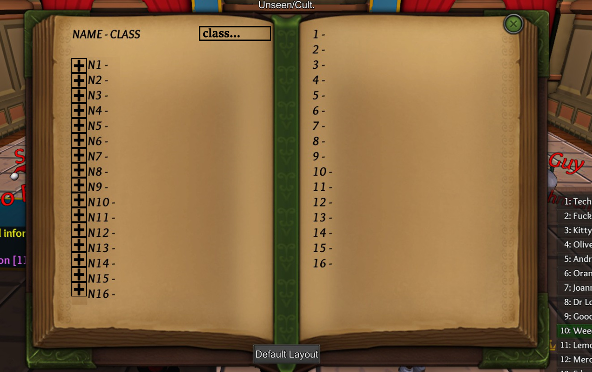

I’ve recommended this game to a few people, and the resounding review I get is that this is the least friendly game to new users of all time.
My suggestion for how to fix this is as follows:
We all know how to log now, because we’ve played more than 10 games. But some people never make it past the first game, because they write RP notes, or don’t know what to answer when the prince shouts claim at them.
There should be a button, similar to the one that default formats your logs, that just adds a log for what you did that night. Everyone logs exactly the same. “N1: Deb 5; Prevented” “N1: Scout 6; Inves 2; NS”
You could still fake logs by typing them in manually, or even do it that way if you’re a weird grognard with your own succinct notation system, but you’d have a target format to shoot for. It would be more work, but you could even implement an element to choose a different classes default logs which would make it super easy.
New players don’t even know what a log is supposed to look like. And I would bet that that causes a significant number of new players to bounce right off the game. Some of my friends certainly did. I felt the same way when I was a new player, except I stuck with it long enough to learn how to do it.
This won’t solve all the problems, my friend got stuck with evil classes or nk for his first two games, and had no idea how to fakelog to the Prince/Psychic/King so obviously he had a very poor user experience, and that’s what this suggestion is about. The current system punishes new players to an unreasonable extent, and doesn’t promote learning or encourage them to stick with the game.
I’ve mocked up an example of what I’m talking about. The right side of the logs don’t matter as much. Keeping track of everyone else’s stuff is a useful skill but it won’t immediately get you executed and make everyone hate you if you fuck it up.
